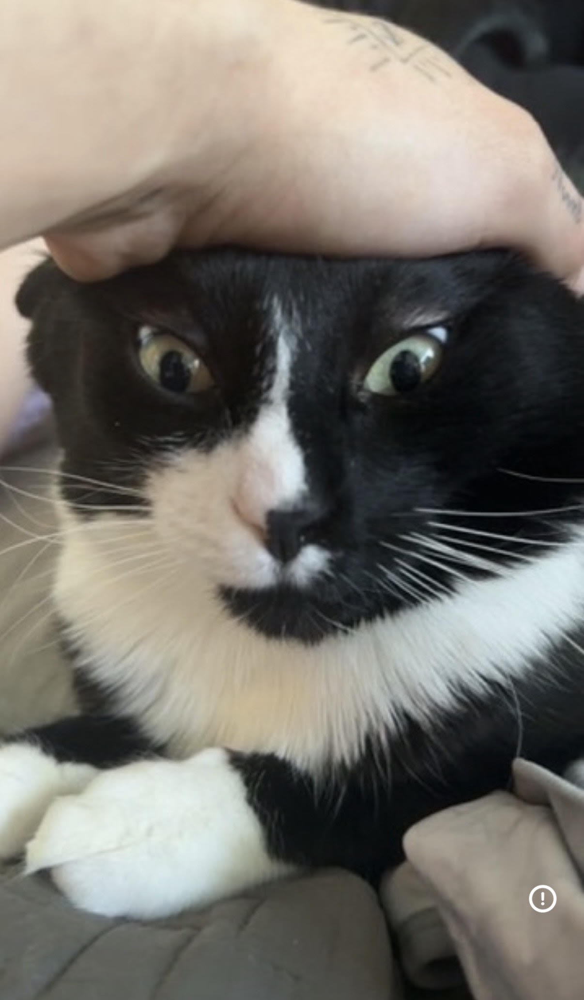

MY BIGGEST INSPIRATION
EST: 00:00:00
LOADING...
MY SISTER

My biggest inspiration is my sister. It took me learning about myself in life - using this website and finding my true passion for computer science - to realize that my sister has been my biggest inspiration all along.
No one will ever compare to the mental and physical love that helped shape me as a human and father. Her influence on my life cannot be overstated.
Thank you for being my biggest inspiration.
Keep in mind that once I fully compile my website, true detail will be put into everything, including this page. But for now, this is what you need to understand about me.